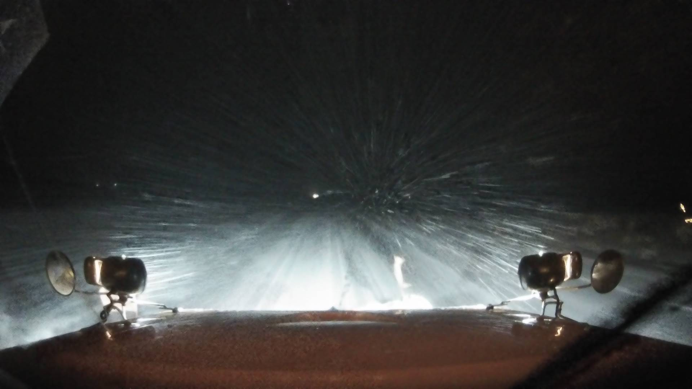

Loading...
Home
Tools
Nearest Neighbour Interpolation
Nested Indicator Kriging Interpolation
About
Enable Real-Time:
Enable Study Area:
Pick a date:
NIK Dataset:
Pick a date
Pick a window (±
0
mins):
Submit Query
ID:
Time:

Dark
Satellite
Light